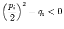
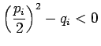
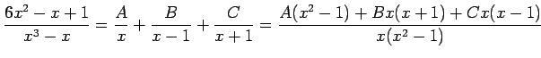

Inhalt Index DeskTop Bronstein

 Arithmetik Elementare Rechenregeln Gebrochenrationale Ausdrücke
Arithmetik Elementare Rechenregeln Gebrochenrationale Ausdrücke


Jede echt gebrochenrationale Funktion
mit teilerfremdem Zähler- und Nennerpolynom ist eindeutig in eine Summe von Partialbrüchen der Form
mit reellen Zahlen und A,C,D zerlegbar. Dazu geht man wie folgt vor:
| Q(x) | = | ||
| (1.48) |
Dabei sind die l reellen Wurzeln von  . Außerdem hat Q(x) r Paare konjugiert komplexer Nullstellen, die man als Nullstellen der quadratischen Faktoren
. Außerdem hat Q(x) r Paare konjugiert komplexer Nullstellen, die man als Nullstellen der quadratischen Faktoren  erhält. Die Zahlen pi,qi sind reell, und es gilt: .
erhält. Die Zahlen pi,qi sind reell, und es gilt: .
| Beispiel A |
|
 |
| Beispiel B |
|
|
| Beispiel C |
|
|
Hinweis: Hat das Nennerpolynom Q(x) nur einfache Wurzeln , dann hat der Ansatz (1.49) die Form
 |
(1.50) |
und die Koeffizienten können wie folgt bestimmt werden:
In den Nennern von (1.51) stehen die Werte der Ableitungen für .
| Beispiel D |
|
und Es ergibt sich die gleiche Lösung wie in Beispiel A. |